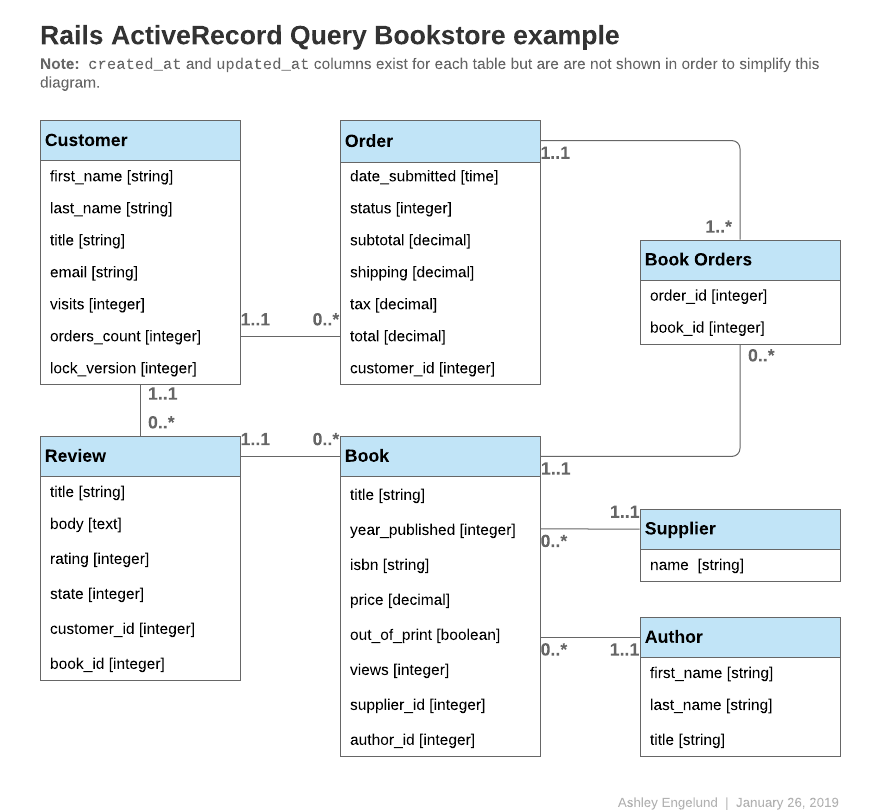

1 What is the Active Record Query Interface?
If you're used to using raw SQL to find database records, then you will generally find that there are better ways to carry out the same operations in Rails. Active Record insulates you from the need to use SQL in most cases.
Active Record will perform queries on the database for you and is compatible with most database systems, including MySQL, MariaDB, PostgreSQL, and SQLite. Regardless of which database system you're using, the Active Record method format will always be the same.
Code examples throughout this guide will refer to one or more of the following models:
All of the following models use id as the primary key, unless specified otherwise.
class Author < ApplicationRecord
has_many :books, -> { order(year_published: :desc) }
end
class Book < ApplicationRecord
belongs_to :supplier
belongs_to :author
has_many :reviews
has_and_belongs_to_many :orders, join_table: 'books_orders'
scope :in_print, -> { where(out_of_print: false) }
scope :out_of_print, -> { where(out_of_print: true) }
scope :old, -> { where(year_published: ...50.years.ago.year) }
scope :out_of_print_and_expensive, -> { out_of_print.where('price > 500') }
scope :costs_more_than, ->(amount) { where('price > ?', amount) }
end
class Customer < ApplicationRecord
has_many :orders
has_many :reviews
end
class Order < ApplicationRecord
belongs_to :customer
has_and_belongs_to_many :books, join_table: 'books_orders'
enum :status, [:shipped, :being_packed, :complete, :cancelled]
scope :created_before, ->(time) { where(created_at: ...time) }
end
class Review < ApplicationRecord
belongs_to :customer
belongs_to :book
enum :state, [:not_reviewed, :published, :hidden]
end
class Supplier < ApplicationRecord
has_many :books
has_many :authors, through: :books
end

2 Retrieving Objects from the Database
To retrieve objects from the database, Active Record provides several finder methods. Each finder method allows you to pass arguments into it to perform certain queries on your database without writing raw SQL.
The methods are:
annotatefindcreate_withdistincteager_loadextendingextract_associatedfromgrouphavingincludesjoinsleft_outer_joinslimitlocknoneoffsetoptimizer_hintsorderpreloadreadonlyreferencesreorderreselectregroupreverse_orderselectwhere
Finder methods that return a collection, such as where and group, return an instance of ActiveRecord::Relation. Methods that find a single entity, such as find and first, return a single instance of the model.
The primary operation of Model.find(options) can be summarized as:
- Convert the supplied options to an equivalent SQL query.
- Fire the SQL query and retrieve the corresponding results from the database.
- Instantiate the equivalent Ruby object of the appropriate model for every resulting row.
- Run
after_findand thenafter_initializecallbacks, if any.
2.1 Retrieving a Single Object
Active Record provides several different ways of retrieving a single object.
2.1.1 find
Using the find method, you can retrieve the object corresponding to the specified primary key that matches any supplied options. For example:
# Find the customer with primary key (id) 10.
irb> customer = Customer.find(10)
=> #<Customer id: 10, first_name: "Ryan">
The SQL equivalent of the above is:
SELECT * FROM customers WHERE (customers.id = 10) LIMIT 1
The find method will raise an ActiveRecord::RecordNotFound exception if no matching record is found.
You can also use this method to query for multiple objects. Call the find method and pass in an array of primary keys. The return will be an array containing all of the matching records for the supplied primary keys. For example:
# Find the customers with primary keys 1 and 10.
irb> customers = Customer.find([1, 10]) # OR Customer.find(1, 10)
=> [#<Customer id: 1, first_name: "Lifo">, #<Customer id: 10, first_name: "Ryan">]
The SQL equivalent of the above is:
SELECT * FROM customers WHERE (customers.id IN (1,10))
The find method will raise an ActiveRecord::RecordNotFound exception unless a matching record is found for all of the supplied primary keys.
If your table uses a composite primary key, you'll need to pass find an array to find a single item. For instance, if customers were defined with [:store_id, :id] as a primary key:
# Find the customer with store_id 3 and id 17
irb> customers = Customer.find([3, 17])
=> #<Customer store_id: 3, id: 17, first_name: "Magda">
The SQL equivalent of the above is:
SELECT * FROM customers WHERE store_id = 3 AND id = 17
To find multiple customers with composite IDs, you would pass an array of arrays:
# Find the customers with primary keys [1, 8] and [7, 15].
irb> customers = Customer.find([[1, 8], [7, 15]]) # OR Customer.find([1, 8], [7, 15])
=> [#<Customer store_id: 1, id: 8, first_name: "Pat">, #<Customer store_id: 7, id: 15, first_name: "Chris">]
The SQL equivalent of the above is:
SELECT * FROM customers WHERE (store_id = 1 AND id = 8 OR store_id = 7 AND id = 15)
2.1.2 take
The take method retrieves a record without any implicit ordering. For example:
irb> customer = Customer.take
=> #<Customer id: 1, first_name: "Lifo">
The SQL equivalent of the above is:
SELECT * FROM customers LIMIT 1
The take method returns nil if no record is found and no exception will be raised.
You can pass in a numerical argument to the take method to return up to that number of results. For example
irb> customers = Customer.take(2)
=> [#<Customer id: 1, first_name: "Lifo">, #<Customer id: 220, first_name: "Sara">]
The SQL equivalent of the above is:
SELECT * FROM customers LIMIT 2
The take! method behaves exactly like take, except that it will raise ActiveRecord::RecordNotFound if no matching record is found.
The retrieved record may vary depending on the database engine.
2.1.3 first
The first method finds the first record ordered by primary key (default). For example:
irb> customer = Customer.first
=> #<Customer id: 1, first_name: "Lifo">
The SQL equivalent of the above is:
SELECT * FROM customers ORDER BY customers.id ASC LIMIT 1
The first method returns nil if no matching record is found and no exception will be raised.
If your default scope contains an order method, first will return the first record according to this ordering.
You can pass in a numerical argument to the first method to return up to that number of results. For example
irb> customers = Customer.first(3)
=> [#<Customer id: 1, first_name: "Lifo">, #<Customer id: 2, first_name: "Fifo">, #<Customer id: 3, first_name: "Filo">]
The SQL equivalent of the above is:
SELECT * FROM customers ORDER BY customers.id ASC LIMIT 3
Models with composite primary keys will use the full composite primary key for ordering.
For instance, if customers were defined with [:store_id, :id] as a primary key:
irb> customer = Customer.first
=> #<Customer id: 2, store_id: 1, first_name: "Lifo">
The SQL equivalent of the above is:
SELECT * FROM customers ORDER BY customers.store_id ASC, customers.id ASC LIMIT 1
On a collection that is ordered using order, first will return the first record ordered by the specified attribute for order.
irb> customer = Customer.order(:first_name).first
=> #<Customer id: 2, first_name: "Fifo">
The SQL equivalent of the above is:
SELECT * FROM customers ORDER BY customers.first_name ASC LIMIT 1
The first! method behaves exactly like first, except that it will raise ActiveRecord::RecordNotFound if no matching record is found.
2.1.4 last
The last method finds the last record ordered by primary key (default). For example:
irb> customer = Customer.last
=> #<Customer id: 221, first_name: "Russel">
The SQL equivalent of the above is:
SELECT * FROM customers ORDER BY customers.id DESC LIMIT 1
The last method returns nil if no matching record is found and no exception will be raised.
Models with composite primary keys will use the full composite primary key for ordering.
For instance, if customers were defined with [:store_id, :id] as a primary key:
irb> customer = Customer.last
=> #<Customer id: 221, store_id: 1, first_name: "Lifo">
The SQL equivalent of the above is:
SELECT * FROM customers ORDER BY customers.store_id DESC, customers.id DESC LIMIT 1
If your default scope contains an order method, last will return the last record according to this ordering.
You can pass in a numerical argument to the last method to return up to that number of results. For example
irb> customers = Customer.last(3)
=> [#<Customer id: 219, first_name: "James">, #<Customer id: 220, first_name: "Sara">, #<Customer id: 221, first_name: "Russel">]
The SQL equivalent of the above is:
SELECT * FROM customers ORDER BY customers.id DESC LIMIT 3
On a collection that is ordered using order, last will return the last record ordered by the specified attribute for order.
irb> customer = Customer.order(:first_name).last
=> #<Customer id: 220, first_name: "Sara">
The SQL equivalent of the above is:
SELECT * FROM customers ORDER BY customers.first_name DESC LIMIT 1
The last! method behaves exactly like last, except that it will raise ActiveRecord::RecordNotFound if no matching record is found.
2.1.5 find_by
The find_by method finds the first record matching some conditions. For example:
irb> Customer.find_by first_name: 'Lifo'
=> #<Customer id: 1, first_name: "Lifo">
irb> Customer.find_by first_name: 'Jon'
=> nil
It is equivalent to writing:
Customer.where(first_name: 'Lifo').take
The SQL equivalent of the above is:
SELECT * FROM customers WHERE (customers.first_name = 'Lifo') LIMIT 1
Note that there is no ORDER BY in the above SQL. If your find_by conditions can match multiple records, you should apply an order to guarantee a deterministic result.
The find_by! method behaves exactly like find_by, except that it will raise ActiveRecord::RecordNotFound if no matching record is found. For example:
irb> Customer.find_by! first_name: 'does not exist'
ActiveRecord::RecordNotFound
This is equivalent to writing:
Customer.where(first_name: 'does not exist').take!
2.1.5.1 Conditions with :id
When specifying conditions on methods like find_by and where, the use of id will match against
an :id attribute on the model. This is different from find, where the ID passed in should be a primary key value.
Take caution when using find_by(id:) on models where :id is not the primary key, such as composite primary key models.
For example, if customers were defined with [:store_id, :id] as a primary key:
irb> customer = Customer.last
=> #<Customer id: 10, store_id: 5, first_name: "Joe">
irb> Customer.find_by(id: customer.id) # Customer.find_by(id: [5, 10])
=> #<Customer id: 5, store_id: 3, first_name: "Bob">
Here, we might intend to search for a single record with the composite primary key [5, 10], but Active Record will
search for a record with an :id column of either 5 or 10, and may return the wrong record.
The id_value method can be used to fetch the value of the :id column for a record, for use in finder
methods such as find_by and where. See example below:
irb> customer = Customer.last
=> #<Customer id: 10, store_id: 5, first_name: "Joe">
irb> Customer.find_by(id: customer.id_value) # Customer.find_by(id: 10)
=> #<Customer id: 10, store_id: 5, first_name: "Joe">
2.2 Retrieving Multiple Objects in Batches
We often need to iterate over a large set of records, as when we send a newsletter to a large set of customers, or when we export data.
This may appear straightforward:
# This may consume too much memory if the table is big.
Customer.all.each do |customer|
NewsMailer.weekly(customer).deliver_now
end
But this approach becomes increasingly impractical as the table size increases, since Customer.all.each instructs Active Record to fetch the entire table in a single pass, build a model object per row, and then keep the entire array of model objects in memory. Indeed, if we have a large number of records, the entire collection may exceed the amount of memory available.
Rails provides two methods that address this problem by dividing records into memory-friendly batches for processing. The first method, find_each, retrieves a batch of records and then yields each record to the block individually as a model. The second method, find_in_batches, retrieves a batch of records and then yields the entire batch to the block as an array of models.
The find_each and find_in_batches methods are intended for use in the batch processing of a large number of records that wouldn't fit in memory all at once. If you just need to loop over a thousand records the regular find methods are the preferred option.
2.2.1 find_each
The find_each method retrieves records in batches and then yields each one to the block. In the following example, find_each retrieves customers in batches of 1000 and yields them to the block one by one:
Customer.find_each do |customer|
NewsMailer.weekly(customer).deliver_now
end
This process is repeated, fetching more batches as needed, until all of the records have been processed.
find_each works on model classes, as seen above, and also on relations:
Customer.where(weekly_subscriber: true).find_each do |customer|
NewsMailer.weekly(customer).deliver_now
end
as long as they have no ordering, since the method needs to force an order internally to iterate.
If an order is present in the receiver the behavior depends on the flag
config.active_record.error_on_ignored_order. If true, ArgumentError is
raised, otherwise the order is ignored and a warning issued, which is the
default. This can be overridden with the option :error_on_ignore, explained
below.
2.2.1.1 Options for find_each
:batch_size
The :batch_size option allows you to specify the number of records to be retrieved in each batch, before being passed individually to the block. For example, to retrieve records in batches of 5000:
Customer.find_each(batch_size: 5000) do |customer|
NewsMailer.weekly(customer).deliver_now
end
:start
By default, records are fetched in ascending order of the primary key. The :start option allows you to configure the first ID of the sequence whenever the lowest ID is not the one you need. This would be useful, for example, if you wanted to resume an interrupted batch process, provided you saved the last processed ID as a checkpoint.
For example, to send newsletters only to customers with the primary key starting from 2000:
Customer.find_each(start: 2000) do |customer|
NewsMailer.weekly(customer).deliver_now
end
:finish
Similar to the :start option, :finish allows you to configure the last ID of the sequence whenever the highest ID is not the one you need.
This would be useful, for example, if you wanted to run a batch process using a subset of records based on :start and :finish.
For example, to send newsletters only to customers with the primary key starting from 2000 up to 10000:
Customer.find_each(start: 2000, finish: 10000) do |customer|
NewsMailer.weekly(customer).deliver_now
end
Another example would be if you wanted multiple workers handling the same
processing queue. You could have each worker handle 10000 records by setting the
appropriate :start and :finish options on each worker.
:error_on_ignore
Overrides the application config to specify if an error should be raised when an order is present in the relation.
:order
Specifies the primary key order (can be :asc or :desc). Defaults to :asc.
Customer.find_each(order: :desc) do |customer|
NewsMailer.weekly(customer).deliver_now
end
2.2.2 find_in_batches
The find_in_batches method is similar to find_each, since both retrieve batches of records. The difference is that find_in_batches yields batches to the block as an array of models, instead of individually. The following example will yield to the supplied block an array of up to 1000 customers at a time, with the final block containing any remaining customers:
# Give add_customers an array of 1000 customers at a time.
Customer.find_in_batches do |customers|
export.add_customers(customers)
end
find_in_batches works on model classes, as seen above, and also on relations:
# Give add_customers an array of 1000 recently active customers at a time.
Customer.recently_active.find_in_batches do |customers|
export.add_customers(customers)
end
as long as they have no ordering, since the method needs to force an order internally to iterate.
2.2.2.1 Options for find_in_batches
The find_in_batches method accepts the same options as find_each:
:batch_size
Just like for find_each, batch_size establishes how many records will be retrieved in each group. For example, retrieving batches of 2500 records can be specified as:
Customer.find_in_batches(batch_size: 2500) do |customers|
export.add_customers(customers)
end
:start
The start option allows specifying the beginning ID from where records will be selected. As mentioned before, by default records are fetched in ascending order of the primary key. For example, to retrieve customers starting on ID: 5000 in batches of 2500 records, the following code can be used:
Customer.find_in_batches(batch_size: 2500, start: 5000) do |customers|
export.add_customers(customers)
end
:finish
The finish option allows specifying the ending ID of the records to be retrieved. The code below shows the case of retrieving customers in batches, up to the customer with ID: 7000:
Customer.find_in_batches(finish: 7000) do |customers|
export.add_customers(customers)
end
:error_on_ignore
The error_on_ignore option overrides the application config to specify if an error should be raised when a specific order is present in the relation.
3 Conditions
The where method allows you to specify conditions to limit the records returned, representing the WHERE-part of the SQL statement. Conditions can either be specified as a string, array, or hash.
3.1 Pure String Conditions
If you'd like to add conditions to your find, you could just specify them in there, just like Book.where("title = 'Introduction to Algorithms'"). This will find all books where the title field value is 'Introduction to Algorithms'.
Building your own conditions as pure strings can leave you vulnerable to SQL injection exploits. For example, Book.where("title LIKE '%#{params[:title]}%'") is not safe. See the next section for the preferred way to handle conditions using an array.
3.2 Array Conditions
Now what if that title could vary, say as an argument from somewhere? The find would then take the form:
Book.where("title = ?", params[:title])
Active Record will take the first argument as the conditions string and any additional arguments will replace the question marks (?) in it.
If you want to specify multiple conditions:
Book.where("title = ? AND out_of_print = ?", params[:title], false)
In this example, the first question mark will be replaced with the value in params[:title] and the second will be replaced with the SQL representation of false, which depends on the adapter.
This code is highly preferable:
Book.where("title = ?", params[:title])
to this code:
Book.where("title = #{params[:title]}")
because of argument safety. Putting the variable directly into the conditions string will pass the variable to the database as-is. This means that it will be an unescaped variable directly from a user who may have malicious intent. If you do this, you put your entire database at risk because once a user finds out they can exploit your database they can do just about anything to it. Never ever put your arguments directly inside the conditions string.
For more information on the dangers of SQL injection, see the Ruby on Rails Security Guide.
3.2.1 Placeholder Conditions
Similar to the (?) replacement style of params, you can also specify keys in your conditions string along with a corresponding keys/values hash:
Book.where("created_at >= :start_date AND created_at <= :end_date",
{ start_date: params[:start_date], end_date: params[:end_date] })
This makes for clearer readability if you have a large number of variable conditions.
3.2.2 Conditions That Use LIKE
Although condition arguments are automatically escaped to prevent SQL injection, SQL LIKE wildcards (i.e., % and _) are not escaped. This may cause unexpected behavior if an unsanitized value is used in an argument. For example:
Book.where("title LIKE ?", params[:title] + "%")
In the above code, the intent is to match titles that start with a user-specified string. However, any occurrences of % or _ in params[:title] will be treated as wildcards, leading to surprising query results. In some circumstances, this may also prevent the database from using an intended index, leading to a much slower query.
To avoid these problems, use sanitize_sql_like to escape wildcard characters in the relevant portion of the argument:
Book.where("title LIKE ?",
Book.sanitize_sql_like(params[:title]) + "%")
3.3 Hash Conditions
Active Record also allows you to pass in hash conditions which can increase the readability of your conditions syntax. With hash conditions, you pass in a hash with keys of the fields you want qualified and the values of how you want to qualify them:
Only equality, range, and subset checking are possible with Hash conditions.
3.3.1 Equality Conditions
Book.where(out_of_print: true)
This will generate SQL like this:
SELECT * FROM books WHERE (books.out_of_print = 1)
The field name can also be a string:
Book.where('out_of_print' => true)
In the case of a belongs_to relationship, an association key can be used to specify the model if an Active Record object is used as the value. This method works with polymorphic relationships as well.
author = Author.first
Book.where(author: author)
Author.joins(:books).where(books: { author: author })
Hash conditions may also be specified in a tuple-like syntax, where the key is an array of columns and the value is an array of tuples:
Book.where([:author_id, :id] => [[15, 1], [15, 2]])
This syntax can be useful for querying relations where the table uses a composite primary key:
class Book < ApplicationRecord
self.primary_key = [:author_id, :id]
end
Book.where(Book.primary_key => [[2, 1], [3, 1]])
3.3.2 Range Conditions
Book.where(created_at: (Time.now.midnight - 1.day)..Time.now.midnight)
This will find all books created yesterday by using a BETWEEN SQL statement:
SELECT * FROM books WHERE (books.created_at BETWEEN '2008-12-21 00:00:00' AND '2008-12-22 00:00:00')
This demonstrates a shorter syntax for the examples in Array Conditions
Beginless and endless ranges are supported and can be used to build less/greater than conditions.
Book.where(created_at: (Time.now.midnight - 1.day)..)
This would generate SQL like:
SELECT * FROM books WHERE books.created_at >= '2008-12-21 00:00:00'
3.3.3 Subset Conditions
If you want to find records using the IN expression you can pass an array to the conditions hash:
Customer.where(orders_count: [1, 3, 5])
This code will generate SQL like this:
SELECT * FROM customers WHERE (customers.orders_count IN (1,3,5))
3.4 NOT Conditions
NOT SQL queries can be built by where.not:
Customer.where.not(orders_count: [1, 3, 5])
In other words, this query can be generated by calling where with no argument, then immediately chain with not passing where conditions. This will generate SQL like this:
SELECT * FROM customers WHERE (customers.orders_count NOT IN (1,3,5))
If a query has a hash condition with non-nil values on a nullable column, the records that have nil values on the nullable column won't be returned. For example:
Customer.create!(nullable_country: nil)
Customer.where.not(nullable_country: "UK")
# => []
# But
Customer.create!(nullable_country: "UK")
Customer.where.not(nullable_country: nil)
# => [#<Customer id: 2, nullable_country: "UK">]
3.5 OR Conditions
OR conditions between two relations can be built by calling or on the first
relation, and passing the second one as an argument.
Customer.where(last_name: 'Smith').or(Customer.where(orders_count: [1, 3, 5]))
SELECT * FROM customers WHERE (customers.last_name = 'Smith' OR customers.orders_count IN (1,3,5))
3.6 AND Conditions
AND conditions can be built by chaining where conditions.
Customer.where(last_name: 'Smith').where(orders_count: [1, 3, 5])
SELECT * FROM customers WHERE customers.last_name = 'Smith' AND customers.orders_count IN (1,3,5)
AND conditions for the logical intersection between relations can be built by
calling and on the first relation, and passing the second one as an
argument.
Customer.where(id: [1, 2]).and(Customer.where(id: [2, 3]))
SELECT * FROM customers WHERE (customers.id IN (1, 2) AND customers.id IN (2, 3))
4 Ordering
To retrieve records from the database in a specific order, you can use the order method.
For example, if you're getting a set of records and want to order them in ascending order by the created_at field in your table:
Book.order(:created_at)
# OR
Book.order("created_at")
You could specify ASC or DESC as well:
Book.order(created_at: :desc)
# OR
Book.order(created_at: :asc)
# OR
Book.order("created_at DESC")
# OR
Book.order("created_at ASC")
Or ordering by multiple fields:
Book.order(title: :asc, created_at: :desc)
# OR
Book.order(:title, created_at: :desc)
# OR
Book.order("title ASC, created_at DESC")
# OR
Book.order("title ASC", "created_at DESC")
If you want to call order multiple times, subsequent orders will be appended to the first:
irb> Book.order("title ASC").order("created_at DESC")
SELECT * FROM books ORDER BY title ASC, created_at DESC
You can also order from a joined table
Book.includes(:author).order(books: { print_year: :desc }, authors: { name: :asc })
# OR
Book.includes(:author).order('books.print_year desc', 'authors.name asc')
In most database systems, on selecting fields with distinct from a result set using methods like select, pluck and ids; the order method will raise an ActiveRecord::StatementInvalid exception unless the field(s) used in order clause are included in the select list. See the next section for selecting fields from the result set.
5 Selecting Specific Fields
By default, Model.find selects all the fields from the result set using select *.
To select only a subset of fields from the result set, you can specify the subset via the select method.
For example, to select only isbn and out_of_print columns:
Book.select(:isbn, :out_of_print)
# OR
Book.select("isbn, out_of_print")
The SQL query used by this find call will be somewhat like:
SELECT isbn, out_of_print FROM books
Be careful because this also means you're initializing a model object with only the fields that you've selected. If you attempt to access a field that is not in the initialized record you'll receive:
ActiveModel::MissingAttributeError: missing attribute '<attribute>' for Book
Where <attribute> is the attribute you asked for. The id method will not raise the ActiveRecord::MissingAttributeError, so just be careful when working with associations because they need the id method to function properly.
If you would like to only grab a single record per unique value in a certain field, you can use distinct:
Customer.select(:last_name).distinct
This would generate SQL like:
SELECT DISTINCT last_name FROM customers
You can also remove the uniqueness constraint:
# Returns unique last_names
query = Customer.select(:last_name).distinct
# Returns all last_names, even if there are duplicates
query.distinct(false)
6 Limit and Offset
To apply LIMIT to the SQL fired by the Model.find, you can specify the LIMIT using limit and offset methods on the relation.
You can use limit to specify the number of records to be retrieved, and use offset to specify the number of records to skip before starting to return the records. For example
Customer.limit(5)
will return a maximum of 5 customers and because it specifies no offset it will return the first 5 in the table. The SQL it executes looks like this:
SELECT * FROM customers LIMIT 5
Adding offset to that
Customer.limit(5).offset(30)
will return instead a maximum of 5 customers beginning with the 31st. The SQL looks like:
SELECT * FROM customers LIMIT 5 OFFSET 30
7 Grouping
To apply a GROUP BY clause to the SQL fired by the finder, you can use the group method.
For example, if you want to find a collection of the dates on which orders were created:
Order.select("created_at").group("created_at")
And this will give you a single Order object for each date where there are orders in the database.
The SQL that would be executed would be something like this:
SELECT created_at
FROM orders
GROUP BY created_at
7.1 Total of Grouped Items
To get the total of grouped items on a single query, call count after the group.
irb> Order.group(:status).count
=> {"being_packed"=>7, "shipped"=>12}
The SQL that would be executed would be something like this:
SELECT COUNT (*) AS count_all, status AS status
FROM orders
GROUP BY status
7.2 HAVING Conditions
SQL uses the HAVING clause to specify conditions on the GROUP BY fields. You can add the HAVING clause to the SQL fired by the Model.find by adding the having method to the find.
For example:
Order.select("created_at as ordered_date, sum(total) as total_price").
group("created_at").having("sum(total) > ?", 200)
The SQL that would be executed would be something like this:
SELECT created_at as ordered_date, sum(total) as total_price
FROM orders
GROUP BY created_at
HAVING sum(total) > 200
This returns the date and total price for each order object, grouped by the day they were ordered and where the total is more than $200.
You would access the total_price for each order object returned like this:
big_orders = Order.select("created_at, sum(total) as total_price")
.group("created_at")
.having("sum(total) > ?", 200)
big_orders[0].total_price
# Returns the total price for the first Order object
8 Overriding Conditions
8.1 unscope
You can specify certain conditions to be removed using the unscope method. For example:
Book.where('id > 100').limit(20).order('id desc').unscope(:order)
The SQL that would be executed:
SELECT * FROM books WHERE id > 100 LIMIT 20
-- Original query without `unscope`
SELECT * FROM books WHERE id > 100 ORDER BY id desc LIMIT 20
You can also unscope specific where clauses. For example, this will remove id condition from the where clause:
Book.where(id: 10, out_of_print: false).unscope(where: :id)
# SELECT books.* FROM books WHERE out_of_print = 0
A relation which has used unscope will affect any relation into which it is merged:
Book.order('id desc').merge(Book.unscope(:order))
# SELECT books.* FROM books
8.2 only
You can also override conditions using the only method. For example:
Book.where('id > 10').limit(20).order('id desc').only(:order, :where)
The SQL that would be executed:
SELECT * FROM books WHERE id > 10 ORDER BY id DESC
-- Original query without `only`
SELECT * FROM books WHERE id > 10 ORDER BY id DESC LIMIT 20
8.3 reselect
The reselect method overrides an existing select statement. For example:
Book.select(:title, :isbn).reselect(:created_at)
The SQL that would be executed:
SELECT books.created_at FROM books
Compare this to the case where the reselect clause is not used:
Book.select(:title, :isbn).select(:created_at)
the SQL executed would be:
SELECT books.title, books.isbn, books.created_at FROM books
8.4 reorder
The reorder method overrides the default scope order. For example if the class definition includes this:
class Author < ApplicationRecord
has_many :books, -> { order(year_published: :desc) }
end
And you execute this:
Author.find(10).books
The SQL that would be executed:
SELECT * FROM authors WHERE id = 10 LIMIT 1
SELECT * FROM books WHERE author_id = 10 ORDER BY year_published DESC
You can using the reorder clause to specify a different way to order the books:
Author.find(10).books.reorder('year_published ASC')
The SQL that would be executed:
SELECT * FROM authors WHERE id = 10 LIMIT 1
SELECT * FROM books WHERE author_id = 10 ORDER BY year_published ASC
8.5 reverse_order
The reverse_order method reverses the ordering clause if specified.
Book.where("author_id > 10").order(:year_published).reverse_order
The SQL that would be executed:
SELECT * FROM books WHERE author_id > 10 ORDER BY year_published DESC
If no ordering clause is specified in the query, the reverse_order orders by the primary key in reverse order.
Book.where("author_id > 10").reverse_order
The SQL that would be executed:
SELECT * FROM books WHERE author_id > 10 ORDER BY books.id DESC
The reverse_order method accepts no arguments.
8.6 rewhere
The rewhere method overrides an existing, named where condition. For example:
Book.where(out_of_print: true).rewhere(out_of_print: false)
The SQL that would be executed:
SELECT * FROM books WHERE out_of_print = 0
If the rewhere clause is not used, the where clauses are ANDed together:
Book.where(out_of_print: true).where(out_of_print: false)
the SQL executed would be:
SELECT * FROM books WHERE out_of_print = 1 AND out_of_print = 0
8.7 regroup
The regroup method overrides an existing, named group condition. For example:
Book.group(:author).regroup(:id)
The SQL that would be executed:
SELECT * FROM books GROUP BY id
If the regroup clause is not used, the group clauses are combined together:
Book.group(:author).group(:id)
the SQL executed would be:
SELECT * FROM books GROUP BY author, id
9 Null Relation
The none method returns a chainable relation with no records. Any subsequent conditions chained to the returned relation will continue generating empty relations. This is useful in scenarios where you need a chainable response to a method or a scope that could return zero results.
Book.none # returns an empty Relation and fires no queries.
# The highlighted_reviews method below is expected to always return a Relation.
Book.first.highlighted_reviews.average(:rating)
# => Returns average rating of a book
class Book
# Returns reviews if there are at least 5,
# else consider this as non-reviewed book
def highlighted_reviews
if reviews.count > 5
reviews
else
Review.none # Does not meet minimum threshold yet
end
end
end
10 Readonly Objects
Active Record provides the readonly method on a relation to explicitly disallow modification of any of the returned objects. Any attempt to alter a readonly record will not succeed, raising an ActiveRecord::ReadOnlyRecord exception.
customer = Customer.readonly.first
customer.visits += 1
customer.save # Raises an ActiveRecord::ReadOnlyRecord
As customer is explicitly set to be a readonly object, the above code will raise an ActiveRecord::ReadOnlyRecord exception when calling customer.save with an updated value of visits.
11 Locking Records for Update
Locking is helpful for preventing race conditions when updating records in the database and ensuring atomic updates.
Active Record provides two locking mechanisms:
- Optimistic Locking
- Pessimistic Locking
11.1 Optimistic Locking
Optimistic locking allows multiple users to access the same record for edits, and assumes a minimum of conflicts with the data. It does this by checking whether another process has made changes to a record since it was opened. An ActiveRecord::StaleObjectError exception is thrown if that has occurred and the update is ignored.
Optimistic locking column
In order to use optimistic locking, the table needs to have a column called lock_version of type integer. Each time the record is updated, Active Record increments the lock_version column. If an update request is made with a lower value in the lock_version field than is currently in the lock_version column in the database, the update request will fail with an ActiveRecord::StaleObjectError.
For example:
c1 = Customer.find(1)
c2 = Customer.find(1)
c1.first_name = "Sandra"
c1.save
c2.first_name = "Michael"
c2.save # Raises an ActiveRecord::StaleObjectError
You're then responsible for dealing with the conflict by rescuing the exception and either rolling back, merging, or otherwise apply the business logic needed to resolve the conflict.
This behavior can be turned off by setting ActiveRecord::Base.lock_optimistically = false.
To override the name of the lock_version column, ActiveRecord::Base provides a class attribute called locking_column:
class Customer < ApplicationRecord
self.locking_column = :lock_customer_column
end
11.2 Pessimistic Locking
Pessimistic locking uses a locking mechanism provided by the underlying database. Using lock when building a relation obtains an exclusive lock on the selected rows. Relations using lock are usually wrapped inside a transaction for preventing deadlock conditions.
For example:
Book.transaction do
book = Book.lock.first
book.title = 'Algorithms, second edition'
book.save!
end
The above session produces the following SQL for a MySQL backend:
SQL (0.2ms) BEGIN
Book Load (0.3ms) SELECT * FROM books LIMIT 1 FOR UPDATE
Book Update (0.4ms) UPDATE books SET updated_at = '2009-02-07 18:05:56', title = 'Algorithms, second edition' WHERE id = 1
SQL (0.8ms) COMMIT
You can also pass raw SQL to the lock method for allowing different types of locks. For example, MySQL has an expression called LOCK IN SHARE MODE where you can lock a record but still allow other queries to read it. To specify this expression just pass it in as the lock option:
Book.transaction do
book = Book.lock("LOCK IN SHARE MODE").find(1)
book.increment!(:views)
end
Note that your database must support the raw SQL, that you pass in to the lock method.
If you already have an instance of your model, you can start a transaction and acquire the lock in one go using the following code:
book = Book.first
book.with_lock do
# This block is called within a transaction,
# book is already locked.
book.increment!(:views)
end
12 Joining Tables
Active Record provides two finder methods for specifying JOIN clauses on the
resulting SQL: joins and left_outer_joins.
While joins should be used for INNER JOIN or custom queries,
left_outer_joins is used for queries using LEFT OUTER JOIN.
12.1 joins
There are multiple ways to use the joins method.
12.1.1 Using a String SQL Fragment
You can just supply the raw SQL specifying the JOIN clause to joins:
Author.joins("INNER JOIN books ON books.author_id = authors.id AND books.out_of_print = FALSE")
This will result in the following SQL:
SELECT authors.* FROM authors INNER JOIN books ON books.author_id = authors.id AND books.out_of_print = FALSE
12.1.2 Using Array/Hash of Named Associations
Active Record lets you use the names of the associations defined on the model as a shortcut for specifying JOIN clauses for those associations when using the joins method.
All of the following will produce the expected join queries using INNER JOIN:
12.1.2.1 Joining a Single Association
Book.joins(:reviews)
This produces:
SELECT books.* FROM books
INNER JOIN reviews ON reviews.book_id = books.id
Or, in English: "return a Book object for all books with reviews". Note that you will see duplicate books if a book has more than one review. If you want unique books, you can use Book.joins(:reviews).distinct.
12.1.3 Joining Multiple Associations
Book.joins(:author, :reviews)
This produces:
SELECT books.* FROM books
INNER JOIN authors ON authors.id = books.author_id
INNER JOIN reviews ON reviews.book_id = books.id
Or, in English: "return all books that have an author and at least one review". Note again that books with multiple reviews will show up multiple times.
12.1.3.1 Joining Nested Associations (Single Level)
Book.joins(reviews: :customer)
This produces:
SELECT books.* FROM books
INNER JOIN reviews ON reviews.book_id = books.id
INNER JOIN customers ON customers.id = reviews.customer_id
Or, in English: "return all books that have a review by a customer."
12.1.3.2 Joining Nested Associations (Multiple Level)
Author.joins(books: [{ reviews: { customer: :orders } }, :supplier])
This produces:
SELECT authors.* FROM authors
INNER JOIN books ON books.author_id = authors.id
INNER JOIN reviews ON reviews.book_id = books.id
INNER JOIN customers ON customers.id = reviews.customer_id
INNER JOIN orders ON orders.customer_id = customers.id
INNER JOIN suppliers ON suppliers.id = books.supplier_id
Or, in English: "return all authors that have books with reviews and have been ordered by a customer, and the suppliers for those books."
12.1.4 Specifying Conditions on the Joined Tables
You can specify conditions on the joined tables using the regular Array and String conditions. Hash conditions provide a special syntax for specifying conditions for the joined tables:
time_range = (Time.now.midnight - 1.day)..Time.now.midnight
Customer.joins(:orders).where('orders.created_at' => time_range).distinct
This will find all customers who have orders that were created yesterday, using a BETWEEN SQL expression to compare created_at.
An alternative and cleaner syntax is to nest the hash conditions:
time_range = (Time.now.midnight - 1.day)..Time.now.midnight
Customer.joins(:orders).where(orders: { created_at: time_range }).distinct
For more advanced conditions or to reuse an existing named scope, merge may be used. First, let's add a new named scope to the Order model:
class Order < ApplicationRecord
belongs_to :customer
scope :created_in_time_range, ->(time_range) {
where(created_at: time_range)
}
end
Now we can use merge to merge in the created_in_time_range scope:
time_range = (Time.now.midnight - 1.day)..Time.now.midnight
Customer.joins(:orders).merge(Order.created_in_time_range(time_range)).distinct
This will find all customers who have orders that were created yesterday, again using a BETWEEN SQL expression.
12.2 left_outer_joins
If you want to select a set of records whether or not they have associated
records you can use the left_outer_joins method.
Customer.left_outer_joins(:reviews).distinct.select('customers.*, COUNT(reviews.*) AS reviews_count').group('customers.id')
Which produces:
SELECT DISTINCT customers.*, COUNT(reviews.*) AS reviews_count FROM customers
LEFT OUTER JOIN reviews ON reviews.customer_id = customers.id GROUP BY customers.id
Which means: "return all customers with their count of reviews, whether or not they have any reviews at all"
12.3 where.associated and where.missing
The associated and missing query methods let you select a set of records
based on the presence or absence of an association.
To use where.associated:
Customer.where.associated(:reviews)
Produces:
SELECT customers.* FROM customers
INNER JOIN reviews ON reviews.customer_id = customers.id
WHERE reviews.id IS NOT NULL
Which means "return all customers that have made at least one review".
To use where.missing:
Customer.where.missing(:reviews)
Produces:
SELECT customers.* FROM customers
LEFT OUTER JOIN reviews ON reviews.customer_id = customers.id
WHERE reviews.id IS NULL
Which means "return all customers that have not made any reviews".
13 Eager Loading Associations
Eager loading is the mechanism for loading the associated records of the objects returned by Model.find using as few queries as possible.
13.1 N + 1 Queries Problem
Consider the following code, which finds 10 books and prints their authors' last_name:
books = Book.limit(10)
books.each do |book|
puts book.author.last_name
end
This code looks fine at the first sight. But the problem lies within the total number of queries executed. The above code executes 1 (to find 10 books) + 10 (one per each book to load the author) = 11 queries in total.
13.1.1 Solution to N + 1 Queries Problem
Active Record lets you specify in advance all the associations that are going to be loaded.
The methods are:
13.2 includes
With includes, Active Record ensures that all of the specified associations are loaded using the minimum possible number of queries.
Revisiting the above case using the includes method, we could rewrite Book.limit(10) to eager load authors:
books = Book.includes(:author).limit(10)
books.each do |book|
puts book.author.last_name
end
The above code will execute just 2 queries, as opposed to the 11 queries from the original case:
SELECT books.* FROM books LIMIT 10
SELECT authors.* FROM authors
WHERE authors.id IN (1,2,3,4,5,6,7,8,9,10)
13.2.1 Eager Loading Multiple Associations
Active Record lets you eager load any number of associations with a single Model.find call by using an array, hash, or a nested hash of array/hash with the includes method.
13.2.1.1 Array of Multiple Associations
Customer.includes(:orders, :reviews)
This loads all the customers and the associated orders and reviews for each.
13.2.1.2 Nested Associations Hash
Customer.includes(orders: { books: [:supplier, :author] }).find(1)
This will find the customer with id 1 and eager load all of the associated orders for it, the books for all of the orders, and the author and supplier for each of the books.
13.2.2 Specifying Conditions on Eager Loaded Associations
Even though Active Record lets you specify conditions on the eager loaded associations just like joins, the recommended way is to use joins instead.
However if you must do this, you may use where as you would normally.
Author.includes(:books).where(books: { out_of_print: true })
This would generate a query which contains a LEFT OUTER JOIN whereas the
joins method would generate one using the INNER JOIN function instead.
SELECT authors.id AS t0_r0, ... books.updated_at AS t1_r5 FROM authors LEFT OUTER JOIN books ON books.author_id = authors.id WHERE (books.out_of_print = 1)
If there was no where condition, this would generate the normal set of two queries.
Using where like this will only work when you pass it a Hash. For
SQL-fragments you need to use references to force joined tables:
Author.includes(:books).where("books.out_of_print = true").references(:books)
If, in the case of this includes query, there were no books for any
authors, all the authors would still be loaded. By using joins (an INNER
JOIN), the join conditions must match, otherwise no records will be
returned.
If an association is eager loaded as part of a join, any fields from a custom select clause will not be present on the loaded models. This is because it is ambiguous whether they should appear on the parent record, or the child.
13.3 preload
With preload, Active Record loads each specified association using one query per association.
Revisiting the N + 1 queries problem, we could rewrite Book.limit(10) to preload authors:
books = Book.preload(:author).limit(10)
books.each do |book|
puts book.author.last_name
end
The above code will execute just 2 queries, as opposed to the 11 queries from the original case:
SELECT books.* FROM books LIMIT 10
SELECT authors.* FROM authors
WHERE authors.id IN (1,2,3,4,5,6,7,8,9,10)
The preload method uses an array, hash, or a nested hash of array/hash in the same way as the includes method to load any number of associations with a single Model.find call. However, unlike the includes method, it is not possible to specify conditions for preloaded associations.
13.4 eager_load
With eager_load, Active Record loads all specified associations using a LEFT OUTER JOIN.
Revisiting the case where N + 1 was occurred using the eager_load method, we could rewrite Book.limit(10) to authors:
books = Book.eager_load(:author).limit(10)
books.each do |book|
puts book.author.last_name
end
The above code will execute just 2 queries, as opposed to the 11 queries from the original case:
SELECT DISTINCT books.id FROM books LEFT OUTER JOIN authors ON authors.id = books.author_id LIMIT 10
SELECT books.id AS t0_r0, books.last_name AS t0_r1, ...
FROM books LEFT OUTER JOIN authors ON authors.id = books.author_id
WHERE books.id IN (1,2,3,4,5,6,7,8,9,10)
The eager_load method uses an array, hash, or a nested hash of array/hash in the same way as the includes method to load any number of associations with a single Model.find call. Also, like the includes method, you can specify conditions for eager loaded associations.
13.5 strict_loading
Eager loading can prevent N + 1 queries but you might still be lazy loading
some associations. To make sure no associations are lazy loaded you can enable
strict_loading.
By enabling strict loading mode on a relation, an
ActiveRecord::StrictLoadingViolationError will be raised if the record tries
to lazily load any association:
user = User.strict_loading.first
user.address.city # raises an ActiveRecord::StrictLoadingViolationError
user.comments.to_a # raises an ActiveRecord::StrictLoadingViolationError
To enable for all relations, change the
config.active_record.strict_loading_by_default flag to true.
To send violations to the logger instead, change
config.active_record.action_on_strict_loading_violation to :log.
13.6 strict_loading!
We can also enable strict loading on the record itself by calling strict_loading!:
user = User.first
user.strict_loading!
user.address.city # raises an ActiveRecord::StrictLoadingViolationError
user.comments.to_a # raises an ActiveRecord::StrictLoadingViolationError
strict_loading! also takes a :mode argument. Setting it to :n_plus_one_only
will only raise an error if an association that will lead to an N + 1 query is
lazily loaded:
user.strict_loading!(mode: :n_plus_one_only)
user.address.city # => "Tatooine"
user.comments.to_a # => [#<Comment:0x00...]
user.comments.first.likes.to_a # raises an ActiveRecord::StrictLoadingViolationError
13.7 strict_loading option on an association
We can also enable strict loading for a single association by providing the strict_loading option:
class Author < ApplicationRecord
has_many :books, strict_loading: true
end
14 Scopes
Scoping allows you to specify commonly-used queries which can be referenced as method calls on the association objects or models. With these scopes, you can use every method previously covered such as where, joins and includes. All scope bodies should return an ActiveRecord::Relation or nil to allow for further methods (such as other scopes) to be called on it.
To define a simple scope, we use the scope method inside the class, passing the query that we'd like to run when this scope is called:
class Book < ApplicationRecord
scope :out_of_print, -> { where(out_of_print: true) }
end
To call this out_of_print scope we can call it on either the class:
irb> Book.out_of_print
=> #<ActiveRecord::Relation> # all out of print books
Or on an association consisting of Book objects:
irb> author = Author.first
irb> author.books.out_of_print
=> #<ActiveRecord::Relation> # all out of print books by `author`
Scopes are also chainable within scopes:
class Book < ApplicationRecord
scope :out_of_print, -> { where(out_of_print: true) }
scope :out_of_print_and_expensive, -> { out_of_print.where("price > 500") }
end
14.1 Passing in Arguments
Your scope can take arguments:
class Book < ApplicationRecord
scope :costs_more_than, ->(amount) { where("price > ?", amount) }
end
Call the scope as if it were a class method:
irb> Book.costs_more_than(100.10)
However, this is just duplicating the functionality that would be provided to you by a class method.
class Book < ApplicationRecord
def self.costs_more_than(amount)
where("price > ?", amount)
end
end
These methods will still be accessible on the association objects:
irb> author.books.costs_more_than(100.10)
14.2 Using Conditionals
Your scope can utilize conditionals:
class Order < ApplicationRecord
scope :created_before, ->(time) { where(created_at: ...time) if time.present? }
end
Like the other examples, this will behave similarly to a class method.
class Order < ApplicationRecord
def self.created_before(time)
where(created_at: ...time) if time.present?
end
end
However, there is one important caveat: A scope will always return an ActiveRecord::Relation object, even if the conditional evaluates to false, whereas a class method, will return nil. This can cause NoMethodError when chaining class methods with conditionals, if any of the conditionals return false.
14.3 Applying a Default Scope
If we wish for a scope to be applied across all queries to the model we can use the
default_scope method within the model itself.
class Book < ApplicationRecord
default_scope { where(out_of_print: false) }
end
When queries are executed on this model, the SQL query will now look something like this:
SELECT * FROM books WHERE (out_of_print = false)
If you need to do more complex things with a default scope, you can alternatively define it as a class method:
class Book < ApplicationRecord
def self.default_scope
# Should return an ActiveRecord::Relation.
end
end
The default_scope is also applied while creating/building a record
when the scope arguments are given as a Hash. It is not applied while
updating a record. E.g.:
class Book < ApplicationRecord
default_scope { where(out_of_print: false) }
end
irb> Book.new
=> #<Book id: nil, out_of_print: false>
irb> Book.unscoped.new
=> #<Book id: nil, out_of_print: nil>
Be aware that, when given in the Array format, default_scope query arguments
cannot be converted to a Hash for default attribute assignment. E.g.:
class Book < ApplicationRecord
default_scope { where("out_of_print = ?", false) }
end
irb> Book.new
=> #<Book id: nil, out_of_print: nil>
14.4 Merging of Scopes
Just like where clauses, scopes are merged using AND conditions.
class Book < ApplicationRecord
scope :in_print, -> { where(out_of_print: false) }
scope :out_of_print, -> { where(out_of_print: true) }
scope :recent, -> { where(year_published: 50.years.ago.year..) }
scope :old, -> { where(year_published: ...50.years.ago.year) }
end
irb> Book.out_of_print.old
SELECT books.* FROM books WHERE books.out_of_print = 'true' AND books.year_published < 1969
We can mix and match scope and where conditions and the final SQL
will have all conditions joined with AND.
irb> Book.in_print.where(price: ...100)
SELECT books.* FROM books WHERE books.out_of_print = 'false' AND books.price < 100
If we do want the last where clause to win then merge can
be used.
irb> Book.in_print.merge(Book.out_of_print)
SELECT books.* FROM books WHERE books.out_of_print = true
One important caveat is that default_scope will be prepended in
scope and where conditions.
class Book < ApplicationRecord
default_scope { where(year_published: 50.years.ago.year..) }
scope :in_print, -> { where(out_of_print: false) }
scope :out_of_print, -> { where(out_of_print: true) }
end
irb> Book.all
SELECT books.* FROM books WHERE (year_published >= 1969)
irb> Book.in_print
SELECT books.* FROM books WHERE (year_published >= 1969) AND books.out_of_print = false
irb> Book.where('price > 50')
SELECT books.* FROM books WHERE (year_published >= 1969) AND (price > 50)
As you can see above the default_scope is being merged in both
scope and where conditions.
14.5 Removing All Scoping
If we wish to remove scoping for any reason we can use the unscoped method. This is
especially useful if a default_scope is specified in the model and should not be
applied for this particular query.
Book.unscoped.load
This method removes all scoping and will do a normal query on the table.
irb> Book.unscoped.all
SELECT books.* FROM books
irb> Book.where(out_of_print: true).unscoped.all
SELECT books.* FROM books
unscoped can also accept a block:
irb> Book.unscoped { Book.out_of_print }
SELECT books.* FROM books WHERE books.out_of_print = true
15 Dynamic Finders
For every field (also known as an attribute) you define in your table,
Active Record provides a finder method. If you have a field called first_name on your Customer model for example,
you get the instance method find_by_first_name for free from Active Record.
If you also have a locked field on the Customer model, you also get find_by_locked method.
You can specify an exclamation point (!) on the end of the dynamic finders
to get them to raise an ActiveRecord::RecordNotFound error if they do not return any records, like Customer.find_by_first_name!("Ryan")
If you want to find both by first_name and orders_count, you can chain these finders together by simply typing "and" between the fields.
For example, Customer.find_by_first_name_and_orders_count("Ryan", 5).
16 Enums
An enum lets you define an Array of values for an attribute and refer to them by name. The actual value stored in the database is an integer that has been mapped to one of the values.
Declaring an enum will:
- Create scopes that can be used to find all objects that have or do not have one of the enum values
- Create an instance method that can be used to determine if an object has a particular value for the enum
- Create an instance method that can be used to change the enum value of an object
for all possible values of an enum.
For example, given this enum declaration:
class Order < ApplicationRecord
enum :status, [:shipped, :being_packaged, :complete, :cancelled]
end
These scopes are created automatically and can be used to find all objects with or without a particular value for status:
irb> Order.shipped
=> #<ActiveRecord::Relation> # all orders with status == :shipped
irb> Order.not_shipped
=> #<ActiveRecord::Relation> # all orders with status != :shipped
These instance methods are created automatically and query whether the model has that value for the status enum:
irb> order = Order.shipped.first
irb> order.shipped?
=> true
irb> order.complete?
=> false
These instance methods are created automatically and will first update the value of status to the named value
and then query whether or not the status has been successfully set to the value:
irb> order = Order.first
irb> order.shipped!
UPDATE "orders" SET "status" = ?, "updated_at" = ? WHERE "orders"."id" = ? [["status", 0], ["updated_at", "2019-01-24 07:13:08.524320"], ["id", 1]]
=> true
Full documentation about enums can be found here.
17 Understanding Method Chaining
The Active Record pattern implements Method Chaining, which allow us to use multiple Active Record methods together in a simple and straightforward way.
You can chain methods in a statement when the previous method called returns an
ActiveRecord::Relation, like all, where, and joins. Methods that return
a single object (see Retrieving a Single Object Section)
have to be at the end of the statement.
There are some examples below. This guide won't cover all the possibilities, just a few as examples. When an Active Record method is called, the query is not immediately generated and sent to the database. The query is sent only when the data is actually needed. So each example below generates a single query.
17.1 Retrieving Filtered Data from Multiple Tables
Customer
.select('customers.id, customers.last_name, reviews.body')
.joins(:reviews)
.where('reviews.created_at > ?', 1.week.ago)
The result should be something like this:
SELECT customers.id, customers.last_name, reviews.body
FROM customers
INNER JOIN reviews
ON reviews.customer_id = customers.id
WHERE (reviews.created_at > '2019-01-08')
17.2 Retrieving Specific Data from Multiple Tables
Book
.select('books.id, books.title, authors.first_name')
.joins(:author)
.find_by(title: 'Abstraction and Specification in Program Development')
The above should generate:
SELECT books.id, books.title, authors.first_name
FROM books
INNER JOIN authors
ON authors.id = books.author_id
WHERE books.title = $1 [["title", "Abstraction and Specification in Program Development"]]
LIMIT 1
Note that if a query matches multiple records, find_by will
fetch only the first one and ignore the others (see the LIMIT 1
statement above).
18 Find or Build a New Object
It's common that you need to find a record or create it if it doesn't exist. You can do that with the find_or_create_by and find_or_create_by! methods.
18.1 find_or_create_by
The find_or_create_by method checks whether a record with the specified attributes exists. If it doesn't, then create is called. Let's see an example.
Suppose you want to find a customer named "Andy", and if there's none, create one. You can do so by running:
irb> Customer.find_or_create_by(first_name: 'Andy')
=> #<Customer id: 5, first_name: "Andy", last_name: nil, title: nil, visits: 0, orders_count: nil, lock_version: 0, created_at: "2019-01-17 07:06:45", updated_at: "2019-01-17 07:06:45">
The SQL generated by this method looks like this:
SELECT * FROM customers WHERE (customers.first_name = 'Andy') LIMIT 1
BEGIN
INSERT INTO customers (created_at, first_name, locked, orders_count, updated_at) VALUES ('2011-08-30 05:22:57', 'Andy', 1, NULL, '2011-08-30 05:22:57')
COMMIT
find_or_create_by returns either the record that already exists or the new record. In our case, we didn't already have a customer named Andy so the record is created and returned.
The new record might not be saved to the database; that depends on whether validations passed or not (just like create).
Suppose we want to set the 'locked' attribute to false if we're
creating a new record, but we don't want to include it in the query. So
we want to find the customer named "Andy", or if that customer doesn't
exist, create a customer named "Andy" which is not locked.
We can achieve this in two ways. The first is to use create_with:
Customer.create_with(locked: false).find_or_create_by(first_name: 'Andy')
The second way is using a block:
Customer.find_or_create_by(first_name: 'Andy') do |c|
c.locked = false
end
The block will only be executed if the customer is being created. The second time we run this code, the block will be ignored.
18.2 find_or_create_by!
You can also use find_or_create_by! to raise an exception if the new record is invalid. Validations are not covered on this guide, but let's assume for a moment that you temporarily add
validates :orders_count, presence: true
to your Customer model. If you try to create a new Customer without passing an orders_count, the record will be invalid and an exception will be raised:
irb> Customer.find_or_create_by!(first_name: 'Andy')
ActiveRecord::RecordInvalid: Validation failed: Orders count can't be blank
18.3 find_or_initialize_by
The find_or_initialize_by method will work just like
find_or_create_by but it will call new instead of create. This
means that a new model instance will be created in memory but won't be
saved to the database. Continuing with the find_or_create_by example, we
now want the customer named 'Nina':
irb> nina = Customer.find_or_initialize_by(first_name: 'Nina')
=> #<Customer id: nil, first_name: "Nina", orders_count: 0, locked: true, created_at: "2011-08-30 06:09:27", updated_at: "2011-08-30 06:09:27">
irb> nina.persisted?
=> false
irb> nina.new_record?
=> true
Because the object is not yet stored in the database, the SQL generated looks like this:
SELECT * FROM customers WHERE (customers.first_name = 'Nina') LIMIT 1
When you want to save it to the database, just call save:
irb> nina.save
=> true
19 Finding by SQL
If you'd like to use your own SQL to find records in a table you can use find_by_sql. The find_by_sql method will return an array of objects even if the underlying query returns just a single record. For example you could run this query:
irb> Customer.find_by_sql("SELECT * FROM customers INNER JOIN orders ON customers.id = orders.customer_id ORDER BY customers.created_at desc")
=> [#<Customer id: 1, first_name: "Lucas" ...>, #<Customer id: 2, first_name: "Jan" ...>, ...]
find_by_sql provides you with a simple way of making custom calls to the database and retrieving instantiated objects.
19.1 select_all
find_by_sql has a close relative called connection.select_all. select_all will retrieve
objects from the database using custom SQL just like find_by_sql but will not instantiate them.
This method will return an instance of ActiveRecord::Result class and calling to_a on this
object would return you an array of hashes where each hash indicates a record.
irb> Customer.connection.select_all("SELECT first_name, created_at FROM customers WHERE id = '1'").to_a
=> [{"first_name"=>"Rafael", "created_at"=>"2012-11-10 23:23:45.281189"}, {"first_name"=>"Eileen", "created_at"=>"2013-12-09 11:22:35.221282"}]
19.2 pluck
pluck can be used to pick the value(s) from the named column(s) in the current relation. It accepts a list of column names as an argument and returns an array of values of the specified columns with the corresponding data type.
irb> Book.where(out_of_print: true).pluck(:id)
SELECT id FROM books WHERE out_of_print = true
=> [1, 2, 3]
irb> Order.distinct.pluck(:status)
SELECT DISTINCT status FROM orders
=> ["shipped", "being_packed", "cancelled"]
irb> Customer.pluck(:id, :first_name)
SELECT customers.id, customers.first_name FROM customers
=> [[1, "David"], [2, "Fran"], [3, "Jose"]]
pluck makes it possible to replace code like:
Customer.select(:id).map { |c| c.id }
# or
Customer.select(:id).map(&:id)
# or
Customer.select(:id, :first_name).map { |c| [c.id, c.first_name] }
with:
Customer.pluck(:id)
# or
Customer.pluck(:id, :first_name)
Unlike select, pluck directly converts a database result into a Ruby Array,
without constructing ActiveRecord objects. This can mean better performance for
a large or frequently-run query. However, any model method overrides will
not be available. For example:
class Customer < ApplicationRecord
def name
"I am #{first_name}"
end
end
irb> Customer.select(:first_name).map &:name
=> ["I am David", "I am Jeremy", "I am Jose"]
irb> Customer.pluck(:first_name)
=> ["David", "Jeremy", "Jose"]
You are not limited to querying fields from a single table, you can query multiple tables as well.
irb> Order.joins(:customer, :books).pluck("orders.created_at, customers.email, books.title")
Furthermore, unlike select and other Relation scopes, pluck triggers an immediate
query, and thus cannot be chained with any further scopes, although it can work with
scopes already constructed earlier:
irb> Customer.pluck(:first_name).limit(1)
NoMethodError: undefined method `limit' for #<Array:0x007ff34d3ad6d8>
irb> Customer.limit(1).pluck(:first_name)
=> ["David"]
You should also know that using pluck will trigger eager loading if the relation object contains include values, even if the eager loading is not necessary for the query. For example:
irb> assoc = Customer.includes(:reviews)
irb> assoc.pluck(:id)
SELECT "customers"."id" FROM "customers" LEFT OUTER JOIN "reviews" ON "reviews"."id" = "customers"."review_id"
One way to avoid this is to unscope the includes:
irb> assoc.unscope(:includes).pluck(:id)
19.3 pick
pick can be used to pick the value(s) from the named column(s) in the current relation. It accepts a list of column names as an argument and returns the first row of the specified column values with corresponding data type.
pick is a short-hand for relation.limit(1).pluck(*column_names).first, which is primarily useful when you already have a relation that is limited to one row.
pick makes it possible to replace code like:
Customer.where(id: 1).pluck(:id).first
with:
Customer.where(id: 1).pick(:id)
19.4 ids
ids can be used to pluck all the IDs for the relation using the table's primary key.
irb> Customer.ids
SELECT id FROM customers
class Customer < ApplicationRecord
self.primary_key = "customer_id"
end
irb> Customer.ids
SELECT customer_id FROM customers
20 Existence of Objects
If you simply want to check for the existence of the object there's a method called exists?.
This method will query the database using the same query as find, but instead of returning an
object or collection of objects it will return either true or false.
Customer.exists?(1)
The exists? method also takes multiple values, but the catch is that it will return true if any
one of those records exists.
Customer.exists?(id: [1, 2, 3])
# or
Customer.exists?(first_name: ['Jane', 'Sergei'])
It's even possible to use exists? without any arguments on a model or a relation.
Customer.where(first_name: 'Ryan').exists?
The above returns true if there is at least one customer with the first_name 'Ryan' and false
otherwise.
Customer.exists?
The above returns false if the customers table is empty and true otherwise.
You can also use any? and many? to check for existence on a model or relation. many? will use SQL count to determine if the item exists.
# via a model
Order.any?
# SELECT 1 FROM orders LIMIT 1
Order.many?
# SELECT COUNT(*) FROM (SELECT 1 FROM orders LIMIT 2)
# via a named scope
Order.shipped.any?
# SELECT 1 FROM orders WHERE orders.status = 0 LIMIT 1
Order.shipped.many?
# SELECT COUNT(*) FROM (SELECT 1 FROM orders WHERE orders.status = 0 LIMIT 2)
# via a relation
Book.where(out_of_print: true).any?
Book.where(out_of_print: true).many?
# via an association
Customer.first.orders.any?
Customer.first.orders.many?
21 Calculations
This section uses count as an example method in this preamble, but the options described apply to all sub-sections.
All calculation methods work directly on a model:
irb> Customer.count
SELECT COUNT(*) FROM customers
Or on a relation:
irb> Customer.where(first_name: 'Ryan').count
SELECT COUNT(*) FROM customers WHERE (first_name = 'Ryan')
You can also use various finder methods on a relation for performing complex calculations:
irb> Customer.includes("orders").where(first_name: 'Ryan', orders: { status: 'shipped' }).count
Which will execute:
SELECT COUNT(DISTINCT customers.id) FROM customers
LEFT OUTER JOIN orders ON orders.customer_id = customers.id
WHERE (customers.first_name = 'Ryan' AND orders.status = 0)
assuming that Order has enum status: [ :shipped, :being_packed, :cancelled ].
21.1 count
If you want to see how many records are in your model's table you could call Customer.count and that will return the number.
If you want to be more specific and find all the customers with a title present in the database you can use Customer.count(:title).
For options, please see the parent section, Calculations.
21.2 average
If you want to see the average of a certain number in one of your tables you can call the average method on the class that relates to the table. This method call will look something like this:
Order.average("subtotal")
This will return a number (possibly a floating-point number such as 3.14159265) representing the average value in the field.
For options, please see the parent section, Calculations.
21.3 minimum
If you want to find the minimum value of a field in your table you can call the minimum method on the class that relates to the table. This method call will look something like this:
Order.minimum("subtotal")
For options, please see the parent section, Calculations.
21.4 maximum
If you want to find the maximum value of a field in your table you can call the maximum method on the class that relates to the table. This method call will look something like this:
Order.maximum("subtotal")
For options, please see the parent section, Calculations.
21.5 sum
If you want to find the sum of a field for all records in your table you can call the sum method on the class that relates to the table. This method call will look something like this:
Order.sum("subtotal")
For options, please see the parent section, Calculations.
22 Running EXPLAIN
You can run explain on a relation. EXPLAIN output varies for each database.
For example, running
Customer.where(id: 1).joins(:orders).explain
may yield
EXPLAIN SELECT `customers`.* FROM `customers` INNER JOIN `orders` ON `orders`.`customer_id` = `customers`.`id` WHERE `customers`.`id` = 1
+----+-------------+------------+-------+---------------+
| id | select_type | table | type | possible_keys |
+----+-------------+------------+-------+---------------+
| 1 | SIMPLE | customers | const | PRIMARY |
| 1 | SIMPLE | orders | ALL | NULL |
+----+-------------+------------+-------+---------------+
+---------+---------+-------+------+-------------+
| key | key_len | ref | rows | Extra |
+---------+---------+-------+------+-------------+
| PRIMARY | 4 | const | 1 | |
| NULL | NULL | NULL | 1 | Using where |
+---------+---------+-------+------+-------------+
2 rows in set (0.00 sec)
under MySQL and MariaDB.
Active Record performs a pretty printing that emulates that of the corresponding database shell. So, the same query running with the PostgreSQL adapter would yield instead
EXPLAIN SELECT "customers".* FROM "customers" INNER JOIN "orders" ON "orders"."customer_id" = "customers"."id" WHERE "customers"."id" = $1 [["id", 1]]
QUERY PLAN
------------------------------------------------------------------------------
Nested Loop (cost=4.33..20.85 rows=4 width=164)
-> Index Scan using customers_pkey on customers (cost=0.15..8.17 rows=1 width=164)
Index Cond: (id = '1'::bigint)
-> Bitmap Heap Scan on orders (cost=4.18..12.64 rows=4 width=8)
Recheck Cond: (customer_id = '1'::bigint)
-> Bitmap Index Scan on index_orders_on_customer_id (cost=0.00..4.18 rows=4 width=0)
Index Cond: (customer_id = '1'::bigint)
(7 rows)
Eager loading may trigger more than one query under the hood, and some queries
may need the results of previous ones. Because of that, explain actually
executes the query, and then asks for the query plans. For example,
Customer.where(id: 1).includes(:orders).explain
may yield this for MySQL and MariaDB:
EXPLAIN SELECT `customers`.* FROM `customers` WHERE `customers`.`id` = 1
+----+-------------+-----------+-------+---------------+
| id | select_type | table | type | possible_keys |
+----+-------------+-----------+-------+---------------+
| 1 | SIMPLE | customers | const | PRIMARY |
+----+-------------+-----------+-------+---------------+
+---------+---------+-------+------+-------+
| key | key_len | ref | rows | Extra |
+---------+---------+-------+------+-------+
| PRIMARY | 4 | const | 1 | |
+---------+---------+-------+------+-------+
1 row in set (0.00 sec)
EXPLAIN SELECT `orders`.* FROM `orders` WHERE `orders`.`customer_id` IN (1)
+----+-------------+--------+------+---------------+
| id | select_type | table | type | possible_keys |
+----+-------------+--------+------+---------------+
| 1 | SIMPLE | orders | ALL | NULL |
+----+-------------+--------+------+---------------+
+------+---------+------+------+-------------+
| key | key_len | ref | rows | Extra |
+------+---------+------+------+-------------+
| NULL | NULL | NULL | 1 | Using where |
+------+---------+------+------+-------------+
1 row in set (0.00 sec)
and may yield this for PostgreSQL:
Customer Load (0.3ms) SELECT "customers".* FROM "customers" WHERE "customers"."id" = $1 [["id", 1]]
Order Load (0.3ms) SELECT "orders".* FROM "orders" WHERE "orders"."customer_id" = $1 [["customer_id", 1]]
=> EXPLAIN SELECT "customers".* FROM "customers" WHERE "customers"."id" = $1 [["id", 1]]
QUERY PLAN
----------------------------------------------------------------------------------
Index Scan using customers_pkey on customers (cost=0.15..8.17 rows=1 width=164)
Index Cond: (id = '1'::bigint)
(2 rows)
22.1 Explain Options
For databases and adapters which support them (currently PostgreSQL and MySQL), options can be passed to provide deeper analysis.
Using PostgreSQL, the following:
Customer.where(id: 1).joins(:orders).explain(:analyze, :verbose)
yields:
EXPLAIN (ANALYZE, VERBOSE) SELECT "shop_accounts".* FROM "shop_accounts" INNER JOIN "customers" ON "customers"."id" = "shop_accounts"."customer_id" WHERE "shop_accounts"."id" = $1 [["id", 1]]
QUERY PLAN
------------------------------------------------------------------------------------------------------------------------------------------------
Nested Loop (cost=0.30..16.37 rows=1 width=24) (actual time=0.003..0.004 rows=0 loops=1)
Output: shop_accounts.id, shop_accounts.customer_id, shop_accounts.customer_carrier_id
Inner Unique: true
-> Index Scan using shop_accounts_pkey on public.shop_accounts (cost=0.15..8.17 rows=1 width=24) (actual time=0.003..0.003 rows=0 loops=1)
Output: shop_accounts.id, shop_accounts.customer_id, shop_accounts.customer_carrier_id
Index Cond: (shop_accounts.id = '1'::bigint)
-> Index Only Scan using customers_pkey on public.customers (cost=0.15..8.17 rows=1 width=8) (never executed)
Output: customers.id
Index Cond: (customers.id = shop_accounts.customer_id)
Heap Fetches: 0
Planning Time: 0.063 ms
Execution Time: 0.011 ms
(12 rows)
Using MySQL or MariaDB, the following:
Customer.where(id: 1).joins(:orders).explain(:analyze)
yields:
ANALYZE SELECT `shop_accounts`.* FROM `shop_accounts` INNER JOIN `customers` ON `customers`.`id` = `shop_accounts`.`customer_id` WHERE `shop_accounts`.`id` = 1
+----+-------------+-------+------+---------------+------+---------+------+------+--------+----------+------------+--------------------------------+
| id | select_type | table | type | possible_keys | key | key_len | ref | rows | r_rows | filtered | r_filtered | Extra |
+----+-------------+-------+------+---------------+------+---------+------+------+--------+----------+------------+--------------------------------+
| 1 | SIMPLE | NULL | NULL | NULL | NULL | NULL | NULL | NULL | NULL | NULL | NULL | no matching row in const table |
+----+-------------+-------+------+---------------+------+---------+------+------+--------+----------+------------+--------------------------------+
1 row in set (0.00 sec)
22.2 Interpreting EXPLAIN
Interpretation of the output of EXPLAIN is beyond the scope of this guide. The following pointers may be helpful:
SQLite3: EXPLAIN QUERY PLAN
MySQL: EXPLAIN Output Format
MariaDB: EXPLAIN
PostgreSQL: Using EXPLAIN
Feedback
You're encouraged to help improve the quality of this guide.
Please contribute if you see any typos or factual errors. To get started, you can read our documentation contributions section.
You may also find incomplete content or stuff that is not up to date. Please do add any missing documentation for main. Make sure to check Edge Guides first to verify if the issues are already fixed or not on the main branch. Check the Ruby on Rails Guides Guidelines for style and conventions.
If for whatever reason you spot something to fix but cannot patch it yourself, please open an issue.
And last but not least, any kind of discussion regarding Ruby on Rails documentation is very welcome on the official Ruby on Rails Forum.